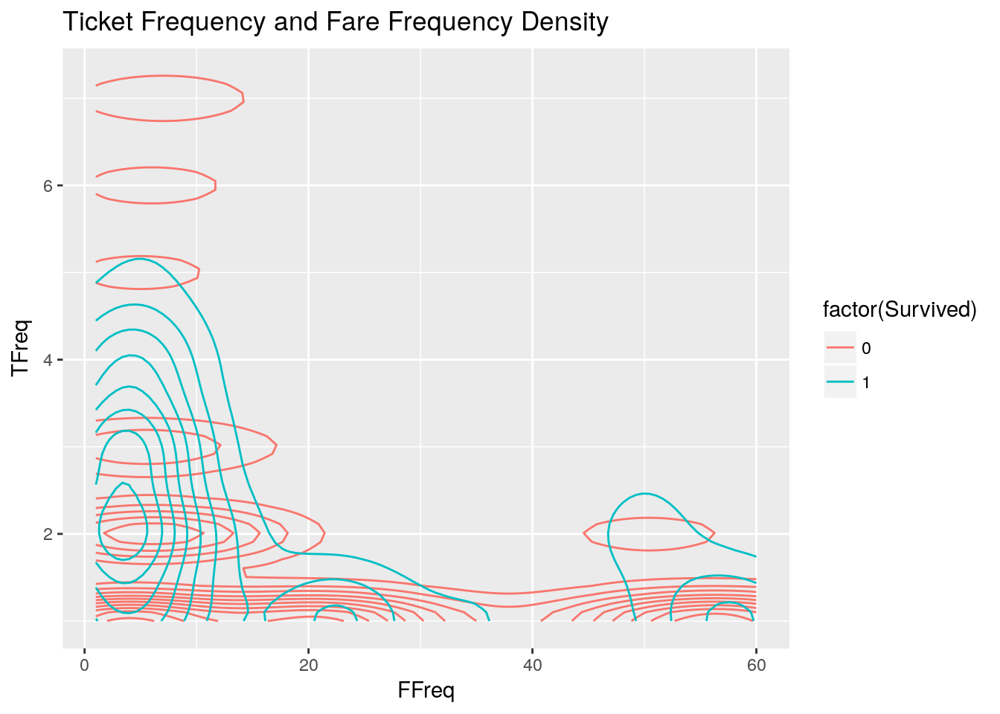

Divide and Conquer [0.82296]
2018-02-15
- 1 Introduction and Preliminaries
- 2 Completing missing data
- 3 Extract group indicators and finding groups
- 4 Engineer SLogL feature
- 5 Adjusting SLogL according to groups
- 5.1 Next we reward or penalize groups of people
- 5.1.1 By increasing the log likelihood score for groups larger than one that have survivors
- 5.1.2 The sconst variable was used to penalize singles prior to version 30
- 5.1.3 By penalizing large group sizes (See TFreq vs Pclass vs SLogL graph)
- 5.1.4 By promoting high likelihood of survival for Minors in Pclass 1 and Pclass 2.
- 5.2 Plot SLogL after adjustments
- 5.1 Next we reward or penalize groups of people
- 6 Conquer
- 7 Conclusions
1 Introduction and Preliminaries
This RMarkdown might be helpful for those that tried to look at this data set at various angles but are having trouble getting a public score better than 0.8. It grew out of studying many approaches and scripts. The kernel is not intended as a “getting started” one as there are many other kernels that achieve that purpose. I’d encourage starting and understanding those first. I wrote it originally as an R script; I thank Heads or Tails for encouraging me to give it a shot converting it to RMarkdown.
Many kernels report cross validation is typically higher than the public score with this data set. The imbalance might be caused of legitimate statistical differences between the train and test because they are rather small. My belief, however, is that the discrepancy is germane to a componding set of proceedures that overfits many kernels. This kernel will produce a model that predicts with a cross validation accuracy of 0.826 and the actual public score is 0.82296.
Beginners may benefit as well as this kernel demonstrates a method on how to fill missing values and apply cross validation to predict scores. It also tries to answer why a score of 100% is almost provably impossible by looking at a narrow class of female passangers with very similar profile in the Fare section of this kernel.
The Titanic data set is fun with many features for a playground set but I came to realize that using all the features is more an invitation for over fitting than helpful for building a good model. Therefore this kernel is about keeping only relevant features and discarding as much as possible to avoid over-fitting. Cabin and Age features have many missing values so we decided to mostly purge them rather than attempting to fill missing values for a better than 80% accuracy.
One of the most important charts appears to be Sex vs Pclass vs Survival so we first focus on it.
This script breaks the problem in sub-stages (divide) where a score feature so called log likelihood ratio is slowly extracted out of the raw features. In the end, we make the final model and prediction (conquer) using just the log likelihood as an aggregated feature. One may argue this is a form of a meta-algorithm, along the lines of boosting. This link has more information on meta-algorithms
It is still a work in progress. There appears to be places for improvement and we are working on them.
Acknowledgments
The following kernels heavily influenced techniques, ideas, and presentation of this kernel.
Titanic: Getting Started With R - Full Guide to 0.81340 by Trevor Stephens.
Exploring Survival on the Titanic by Megan Risdal.
Tidy TitaRnic by Heads or Tails.
Many others.
1.1 Load libraries
library(plyr); # load plyr prior to dplyr to avoid warnings
library(caret); # A nice machine learning wrapper library
library(dplyr); # data manipulation
library(gridExtra); # multiple plots in one page
library(rpart.plot);# nice plots for rpart trees 1.2 Load data
inpath <- "../data/";
outpath <- "../data/";
kaggle <- F;
if(!dir.exists(inpath)) {
kaggle <- T;
inpath <- "../input/"; # changing path to Kaggle's environment
outpath <- "";
}
train <- read.csv(paste0(inpath,"train.csv"));
test <- read.csv(paste0(inpath,"test.csv"));1.3 Combine data
We combine the test and train sets for joint pre-processing of features. It is mainly used to the imputation of missing data. Combining train and test sets for this step ensures better statistics is obtained for the features before predicting missing ones. We also add an indicator flag for the two sets.
test$Survived <- NA;
test$Set <- "Test";
train$Set <- "Train";
comb <- rbind(train, test);
test_index <- comb %>% dplyr::filter(Set=="Test") %>% .$PassengerId # test PassengerId 1.4 Let us fix a couple of errors in the data set
Thousands of kagglers worked on this data set. Some folks really digged into the details. The following fixes SibSp/Parch values for two passengers (Id=280 and Id=1284) according to this kernel because a 16 year old can’t have a 13 year old son! He goes further and confirm it with historical data.
comb$SibSp[comb$PassengerId==280] = 0
comb$Parch[comb$PassengerId==280] = 2
comb$SibSp[comb$PassengerId==1284] = 1
comb$Parch[comb$PassengerId==1284] = 11.5 Transform Survived to a categorical target for binary classification
Survived will be treated as a categorical target.
comb$Survived <- factor(comb$Survived);2 Completing missing data
The first step will be completing missing data. There are four features with missing data.
- Fare values: 1 passengers.
- Embarked values: 2 passengers.
- Cabin values: 77% missing.
- Age values: 20% missing.
2.1 Completing Fare
There are different ways and tools of completing missing data. We will use rpart because it is simple and it tolerates other missing features during training.
trControl <- trainControl(method="repeatedcv", number=7, repeats=5);
faremiss <- which(is.na(comb$Fare)); # missing fares (only PassengerId = 1044 is missing)
model_f <- train( Fare ~ Pclass + Sex + Embarked + SibSp + Parch,
data = comb %>% dplyr::filter(!is.na(Fare)),
trControl = trControl, method="rpart", na.action = na.pass, tuneLength = 5);
comb$Fare[faremiss] = predict(model_f, comb[faremiss,]);
comb$FareFac <- factor(comb$Fare); rpart trees can be plotted nicely with the rpart.plot package
rpart.plot(model_f$finalModel)
Smallish trees like this help interpretation of features. We can see that naturally passengers in Pclass 1 have paid more Fare. It is known that the Fare values are the aggregate for all members in a group such as a family. This is the reason for higher Fare values when Parch and SibSp are larger. We can also see more obscure information such as males in Pclass 1 without spouses and children paid less Fare than females. However, notice also the female Fare value (97) is about twice the value for males (53). It is probably an indication many females without spouses or children in Pclass 1 were not traveling alone.
Let’s now check how reliable the estimates are.
print(model_f$results)## cp RMSE Rsquared MAE RMSESD RsquaredSD MAESD
## 1 0.01133431 37.07382 0.4871965 17.71090 8.334698 0.09259720 1.533281
## 2 0.03173633 38.63881 0.4431675 19.16694 8.507190 0.07962968 1.950470
## 3 0.03471075 38.73258 0.4400831 19.26496 8.479470 0.07722347 1.906047
## 4 0.07498220 40.18583 0.3965730 20.03655 8.433033 0.06454301 2.022942
## 5 0.36003718 47.03216 0.3209752 26.19679 6.463637 0.03360548 4.095369The RMSE is large so it will only serve as a ball park. However, we will not worry much about it because only one passenger had a missing fare value.
2.2 Completing Embarked
Embarked is a feature that is not used in the remaining of the kernel. It is one of those features we decided to drop to prevent over fitting. I’d comment that this might look odd because I know that having Sex + Pclass + Embarked is better than Sex + Pclass. It is a good topic for investigation. I guess it interacts badly with groups.
2.3 Completing Cabin
There are too many missing values for this feature. We will not attempt to complete missing values in order to prevent adding noise. However, we will use later on the available values to help detect small groups.
2.4 Completing Age
About 20% of the values are missing. The next plot shows that the Age feature has missing values primarily in Pclass 3.
ggplot(comb, aes(Pclass,fill=!is.na(Age))) + geom_bar(position="dodge") + labs(title="Passenger Has Age",fill="Has Age")We decide at this point to dismiss Age information for Pclass 3. Having to complete a large percentage of missing values may add more noise to the prediction system for a goal of better than 80% accuracy.
2.4.1 How Age impacts Pclass 1 and 2
From the previous observations, we plot the density for survival per age for the remaining Pclass 1 and 2.
ggplot(comb %>% dplyr::filter(Set=="Train", Pclass!=3), aes(Age)) +
geom_density(alpha=0.5, aes(fill=factor(Survived))) + labs(title="Survival density per Age for Pclass 1 and 2");The previous graph supports the case that children under around 14 for Pclass 1 and 2 have high likelihood of survival and other age bands are likely to have little impact for predictions. We create the feature that indicates children below 14 in Pclass 1 and Pclass 2.
child <- 14;
comb$Minor <- ifelse(comb$Age<child&comb$Pclass!=3, 1, 0);
comb$Minor <- ifelse(is.na(comb$Minor), 0, comb$Minor);3 Extract group indicators and finding groups
There is little doubt that knowing how people formed groups (such as a family) or belonged to certain groups (such as children) is key in this data set. Several good kernels demonstrate that. We attempt to identify various types of groups in addition to the typical family and title as in typical kernels. One of the main differences in this kernel is that we don’t engineer at title feature from the name feature as it is done in most kernels. We believe it is either not very useful or a potential source for over fitting.
3.1 Compute frequencies
First we will compute the size of groups for Ticket and FareFac. Here’s a fancy way of how we may compute frequencies of features by group in R. These will be used to determine group sizes.
comb$TFreq <- ave(seq(nrow(comb)), comb$Ticket, FUN=length);
comb$FFreq <- ave(seq(nrow(comb)), comb$FareFac, FUN=length);
comb$CFreq <- ave(seq(nrow(comb)), comb$Cabin, FUN=length);3.2 Family
Here a Surname feature is engineered from the Name feature. It will be used later as one of the group indicators.
comb$Surname <- sapply(as.character(comb$Name), FUN=function(x) {strsplit(x, split='[,.]')[[1]][1]});3.3 Fares
An interesting characteristic of the fare prices in this data set is that they are very granular. They are so finely granulated some obscure potential groups would be left unnoticed without using it. For example, only two passengers paid the exact amount of 6.75 for their fare, embarked at the same port, had ticked numbers very close, etc. Perhaps identifying these tiny groups gives us an edge for an extra point or two.
print(comb %>% dplyr::filter(Fare=="6.75")) # A young couple?## PassengerId Survived Pclass Name Sex Age
## 1 144 0 3 Burke, Mr. Jeremiah male 19
## 2 655 0 3 Hegarty, Miss. Hanora "Nora" female 18
## SibSp Parch Ticket Fare Cabin Embarked Set FareFac Minor TFreq FFreq
## 1 0 0 365222 6.75 Q Train 6.75 0 1 2
## 2 0 0 365226 6.75 Q Train 6.75 0 1 2
## CFreq Surname
## 1 1014 Burke
## 2 1014 HegartyIs this a young couple? Note that if it is, it would had been undetected by typical proceedures to identify “families”. This example is also a remarkable demonstration of why achiving a score of 100% is very unlikely. We have a young female in Pclass=3 with no relatives that didn’t make it to the survived list. Let’s list others with a similar profile:
comb %>% dplyr::filter(Sex=="female",Pclass==3,SibSp==0,Parch==0,Age>15, Age<20)## PassengerId Survived Pclass Name
## 1 45 1 3 Devaney, Miss. Margaret Delia
## 2 115 0 3 Attalah, Miss. Malake
## 3 157 1 3 Gilnagh, Miss. Katherine "Katie"
## 4 209 1 3 Carr, Miss. Helen "Ellen"
## 5 655 0 3 Hegarty, Miss. Hanora "Nora"
## 6 678 1 3 Turja, Miss. Anna Sofia
## 7 787 1 3 Sjoblom, Miss. Anna Sofia
## 8 808 0 3 Pettersson, Miss. Ellen Natalia
## 9 900 <NA> 3 Abrahim, Mrs. Joseph (Sophie Halaut Easu)
## 10 958 <NA> 3 Burns, Miss. Mary Delia
## 11 979 <NA> 3 Badman, Miss. Emily Louisa
## 12 1005 <NA> 3 Buckley, Miss. Katherine
## 13 1089 <NA> 3 Nilsson, Miss. Berta Olivia
## 14 1207 <NA> 3 Hagardon, Miss. Kate
## 15 1237 <NA> 3 Abelseth, Miss. Karen Marie
## Sex Age SibSp Parch Ticket Fare Cabin Embarked Set
## 1 female 19.0 0 0 330958 7.8792 Q Train
## 2 female 17.0 0 0 2627 14.4583 C Train
## 3 female 16.0 0 0 35851 7.7333 Q Train
## 4 female 16.0 0 0 367231 7.7500 Q Train
## 5 female 18.0 0 0 365226 6.7500 Q Train
## 6 female 18.0 0 0 4138 9.8417 S Train
## 7 female 18.0 0 0 3101265 7.4958 S Train
## 8 female 18.0 0 0 347087 7.7750 S Train
## 9 female 18.0 0 0 2657 7.2292 C Test
## 10 female 18.0 0 0 330963 7.8792 Q Test
## 11 female 18.0 0 0 A/4 31416 8.0500 S Test
## 12 female 18.5 0 0 329944 7.2833 Q Test
## 13 female 18.0 0 0 347066 7.7750 S Test
## 14 female 17.0 0 0 AQ/3. 30631 7.7333 Q Test
## 15 female 16.0 0 0 348125 7.6500 S Test
## FareFac Minor TFreq FFreq CFreq Surname
## 1 7.8792 0 1 10 1014 Devaney
## 2 14.4583 0 2 4 1014 Attalah
## 3 7.7333 0 1 7 1014 Gilnagh
## 4 7.75 0 1 55 1014 Carr
## 5 6.75 0 1 2 1014 Hegarty
## 6 9.8417 0 1 1 1014 Turja
## 7 7.4958 0 1 3 1014 Sjoblom
## 8 7.775 0 1 26 1014 Pettersson
## 9 7.2292 0 1 24 1014 Abrahim
## 10 7.8792 0 1 10 1014 Burns
## 11 8.05 0 1 60 1014 Badman
## 12 7.2833 0 1 1 1014 Buckley
## 13 7.775 0 1 26 1014 Nilsson
## 14 7.7333 0 1 7 1014 Hagardon
## 15 7.65 0 1 6 1014 AbelsethIt becomes clear that they all have a similar profile, with no family ties, and survival rate is around 63%. We have seven of them to make a prediction in the test set and unless someone comes up with a better idea, the optimum bet is to bet all of those with a similar profile survived. However, most likely around 37% of them perished and a prediction error is probably inevitable making a score of 100% an improbable achievement using only statistics and machine learning. Conversely, if you do see a kernel that does extremely well, you may want to understand how they may be handling those “tough” types of profiles.
3.4 Finding groups
We run a loop over the passengers to assign them groups and a group ID (GID).
comb$GID <- rep(NA, nrow(comb));
maxgroup <- 12; # maximum size of a group
for ( i in comb$PassengerId) {
if(comb$SibSp[i] + comb$Parch[i] > 0) { # Check first if ID has relatives
comb$GID[i] <- paste0(comb$Surname[i], comb$SibSp[i] + comb$Parch[i]); # SibSp and Parch are used to potentially differentiate different families with the same Surname.
} else {
if(comb$TFreq[i] > 1 & is.na(comb$GID[i])) { # Next if shares ticket number with others
comb$GID[i] <- as.character(comb$Ticket[i]);
} else {
if(comb$CFreq[i] > 1 & comb$CFreq[i]<maxgroup & is.na(comb$GID[i])) { # Next if shares cabin with others
comb$GID[i] <- as.character(comb$Cabin[i]);
}
else {
if(comb$FFreq[i] > 1 & comb$FFreq[i]<maxgroup & is.na(comb$GID[i])) { # Next if shares Fare value with others
comb$GID[i] <- as.character(comb$FareFac[i]);
} else {
comb$GID[i] <- "Single"; # Individual doesn't belong to any group
}
}
}
}
}
comb$GID <- factor(comb$GID);4 Engineer SLogL feature
Secret sauce #2: Engineer a log likelihood ratio survival feature (SLogL). The idea is to consolidate all features into a single number indicative of Survival. Log likelihood ratio is a transformation from a binary random variable such as Survival to a point in the real line. SLogL gets bigger when survival is likely and gets smaller (negative) when survival is less likely. SLogL is zero when survival is fifty-fifty. The toss of a fair coin has a log likelihood ratio of zero.
Say you have this binary random variable (Survived) and there are multiple “features” that affect it. There is an underlying assumption that the features must be independent (one reason why I make an effort not to bring too many features unless needed because I know that it would violate the theory otherwise. Some of them are highly correlated. Sex and (Mr, Mrs) for those that process Title are examples. Otherwise you’ll start double counting (overfitting) unless you take other preventive measures.
Say then you have three independent features A, B, and C that influence Survived. Feature A says that probability of survival is PA (and by exclusion death is 1-PA). Then the log likelihood contribution to SLogL by A is computed by SLogA = log(PA/(1-PA)). From the assumption of feature independence and the definition of log likelihood, SLogL becomes SLogA + SLogB + SlogC. In other words, we add the log likelihood ratio contributions of each of the independent features. In a real world, the features may be correlated. In this dataset, if A is Sex and B is Title you’ll have twice the proper contribution to SLogL with respect to Sex.
More information about log likelihood ratio can be found here.
It is related to logistic regression
comb$SLogL <- rep(0,nrow(comb));
# define function to compute log likelihood of a/(1-a)
logl <- function(a) {
a <- max(a,0.1); # avoids log(0)
a <- min(a,0.9); # avoids division by 0
return (log(a/(1-a)));
}4.1 Pclass and Sex
The next relatively simple plot let us draw many interesting conclusions.
p <- list();
item <- 1;
ylim <- 300;
for(class in c(1:3)){
for(sex in c("male", "female")) {
p[[item]] <- ggplot(comb %>% dplyr::filter(Set=="Train", Pclass==class, Sex==sex), aes(x=Survived)) +
geom_bar(aes(fill=Survived)) + scale_y_continuous(limits=c(0,ylim)) +
theme(legend.position="none") + labs(title=paste('Pclass=', as.character(class), sex));
item <- item + 1;
}
}
do.call(grid.arrange, p)- The fate of passengers in Pclass 2 is almost certain: females almost all survive, males almost all perish.
- Pclass 1 males are not as lucky as in Pclass 2 but females almost all survive.
- The luck for females in Pclass 3 is mostly a flip of a coin, close to 50%. I believe this is the one of the strongest indicators for the limits of achivable score in this dataset.
- Males in Pclass 1 has survival rate that is higher than others. I believe this brings difficulties similarly as in the case above because the probability of survival gets closer to 50%
From items 3 and 4, I believe that concentrating efforts on them might produce some extra points. This kernel doesn’t make directly effort towards that but it is an idea to have in mind.
Now we compute the log likelihood ratio of survival for each of the 6 areas in the grid.
for (sex in c("male", "female")) {
for (class in c(1:3)) {
comb$SLogL[comb$Sex==sex& comb$Pclass==class] <-
logl(nrow(comb %>% dplyr::filter(Survived==1, Sex==sex, Pclass==class))/nrow(comb %>% dplyr::filter(Set=="Train", Sex==sex, Pclass==class)));
}
}4.2 How Survived relates to Ticket and Fare frequencies?
The following plot confirms there is information about survival by looking at the frequency of duplicate tickets and fares
ggplot(comb %>% dplyr::filter(Set=="Train"), aes(x=FFreq, y=TFreq, color=factor(Survived))) +
geom_density_2d() + labs(title="Ticket Frequency and Fare Frequency Density");
pf <- ggplot(comb %>% dplyr::filter(Set=="Train",Sex=='female'), aes(x=FFreq, y=TFreq, color=Survived)) +
geom_density_2d() + labs(title="TFreq and FFreq Density (female)");
pm <- ggplot(comb %>% dplyr::filter(Set=="Train",Sex=="male"), aes(x=FFreq, y=TFreq, color=Survived)) +
geom_density_2d() + labs(title="TFreq and FFreq Density (male)");
grid.arrange(pf, pm, ncol=2);4.3 TFreq vs Pclass vs SLogL graph
Observe in this chart the SLogL has a few concentrations of undecided outcomes. They are mainly around an SLogL of zero as expected. The next steps will diffuse these areas in preparation for the last conquer step.
ggplot(comb %>% dplyr::filter(Set=="Train"), aes(x=Pclass, y=SLogL)) + geom_jitter(aes(color=Survived)) +
facet_grid( . ~ TFreq, labeller=label_both) + labs(title="SLogL vs Pclass vs TFreq")5 Adjusting SLogL according to groups
ggplot(comb %>% dplyr::filter(Set=="Train"), aes(x=FFreq, y=TFreq, color=Survived, alpha=0.5)) +
geom_count(position=position_dodge(width=5)) + labs(title="Ticket and Fare Frequencies");5.1 Next we reward or penalize groups of people
Group sizes have been argued as one of the driving factors for survival in many of the earlier kernels. Large groups may had a harder time to organize themselves moving towards the life boats.
ticket_stats <- comb %>% group_by(Ticket) %>% summarize(l = length(Survived), na = sum(is.na(Survived)), c = sum(as.numeric(Survived)-1, na.rm=T));5.1.1 By increasing the log likelihood score for groups larger than one that have survivors
Note we apply this bias only to groups that contain individuals we need to predict. Applying to all seems to add noise. It is something that’s worth more investigation (version 54 adds the note below).
Note: Daliun2 was the first to ask for mode details about the next block and Martin Krasser asked for more details at version 53. We can apply the same bias to the entire set by removing ticket_stats$na[i] > 0 & in the next block. Thanks to Martin, I decided to revisit this section in the eyes of cross validation (which I didn’t have in earlier versions of this kernel). The interesting observation is that by applying the bias to all, the cross validation goes up but the standard deviation of the cross validation also goes up, which confirms the model gets noisier. With respect to public score, it appears the maintaining the standard deviation low is more important.
for ( i in 1:nrow(ticket_stats)) {
plist <- which(comb$Ticket==ticket_stats$Ticket[i]);
if(ticket_stats$na[i] > 0 & ticket_stats$l[i] > 1 & ticket_stats$c[i] > 0) {
comb$SLogL[plist] <- comb$SLogL[plist] + 3;
}
}5.1.2 The sconst variable was used to penalize singles prior to version 30
However, after testing a range of small constants (positive or negative other than 0), we concluded that this is being used by the final optimizer to differentiate singles from not singles rather than a being interpreted directly as penalty or reward.
Motivated Akshay’s question in the comments section, I decided to dig a little deeper here. I checked the differences in the output when sconst was set to zero. We can find that when we do so, 27 females in the Single category in Pclass 3 switch state from survived to perished. No other changes are observed in the output. Earlier we commented that by just looking at Sex and Pclass chart, females in Pclass 3 had a fifty-fifty chance. This extra piece of information breaks that balance and creates a big (favorable to a better cross validation and public score) swing in the output.
More comments and code to follow on this. Stay tuned.
sconst <- -2.1;
comb$SLogL[comb$GID=="Single"] <- comb$SLogL[comb$GID=="Single"] - sconst;5.1.3 By penalizing large group sizes (See TFreq vs Pclass vs SLogL graph)
comb$SLogL[comb$TFreq == 7] <- comb$SLogL[comb$TFreq == 7] - 3;
comb$SLogL[comb$TFreq == 8] <- comb$SLogL[comb$TFreq == 8] - 1;
comb$SLogL[comb$TFreq == 11] <- comb$SLogL[comb$TFreq == 11] - 3;5.1.4 By promoting high likelihood of survival for Minors in Pclass 1 and Pclass 2.
comb$SLogL[comb$Minor==1] <- 8;5.2 Plot SLogL after adjustments
Note how the previous steps diffused previously bundled areas. Now we may choose an optimizer algorithm to perform the final classification in the conquer stage of this process.
ggplot(comb %>% dplyr::filter(Set=="Train"), aes(x=Pclass, y=SLogL)) + geom_jitter(aes(color=Survived)) +
facet_grid( . ~ TFreq, labeller=label_both) + labs(title="SLogL vs Pclass vs TFreq")
6 Conquer
In this stage we simply perform the final prediction using just the target Survived and feature SLogL alone. KNN is used in the kernel but replacing it by ‘rf’ lets the optimization be done by the random forest algorithm. Random forest and other algorithms such as treebag all produce the same output. It indirectly demonstrates the SLogL feature after adjustments seems to have a smooth distribution in space and many optimization algorithms have no trouble finding a solution for it.
6.1 Cross validation
The next chunk models, predicts and prints the cross validation. Cross validation is an essential step in competitions to help up us not only calibrate the parameters of our model but estimate the prediction accuracy with unseen data.
set.seed(2017);
trControl <- trainControl(method="repeatedcv", number=7, repeats = 5);
fms <- formula("Survived ~ SLogL");
model_m <- train(fms, data = comb %>% dplyr::filter(Set=="Train"),
metric="Accuracy", trControl = trControl, method = "knn");
comb$Pred <- predict(model_m, comb);
print(model_m$results)## k Accuracy Kappa AccuracySD KappaSD
## 1 5 0.8246958 0.6107519 0.02569013 0.05892397
## 2 7 0.8222246 0.6040849 0.02141447 0.04955000
## 3 9 0.8193034 0.5968337 0.02135468 0.04990704Note how the cross validation Accuracy score is within very close range of what this kernel obtains as a public score (0.82296), which demonstrates how over fitting is being avoided while achieving a high accuracy.
6.2 Write submission file
df_final <- data.frame(PassengerId = comb$PassengerId[test_index], Survived=comb$Pred[test_index]);
write.csv(df_final, paste0(outpath,"pred_divconq.csv"), row.names =F, quote=F)7 Conclusions
A good public score can be achieved using the approach of engineering a single scalar (SLogL) and then running a final optimization on top of it. The used method can be seen as boosting or a form of meta-algorithm. Cross validation of the model demonstrates that the achieved public score of 0.82296 is very close to predictions.